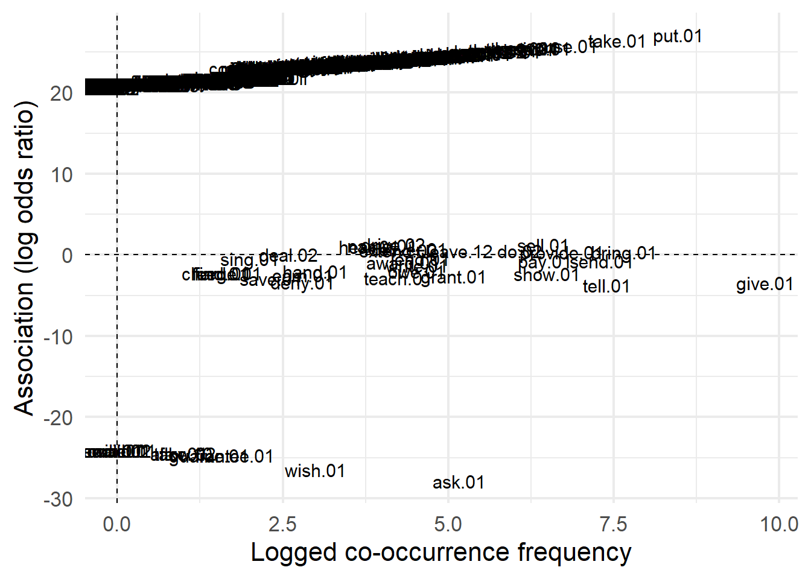

Computational Construction Grammar and Collostructional Analysis on a PropBank-annotated Corpus
1 Introduction
Construction Grammar (CxG) is a general term for a family of theories used for describing and interpreting language. It emphasises the importance of regular patterns of language use, known as constructions. It argues that these constructions capture all linguistic knowledge in the shape of form-meaning pairs. In other words, in CxG the traditional concepts of lexicon and grammar are combined into one. There is no distinction between the two as form is inherently connected to meaning (allthecxgboysandgirls?). Collostructional analysis, developed by (griesstefall?), is a combination of several quantative (statistical) methods for examining the relationship between words (lemmas) and structures. The term collostruction, a blend of the words collocation and construction, describes the method of measuring the level of attraction or repulsion that words have towards specific syntactic constructions.
Most studies using collostructional analysis have focused on the relationship between verbs and constructions that convey information about argument structure ((gries2013?)). This present paper follows in those footsteps but will take a slightly different approach. It still studies the patterns of co-occurrence between verbs and specific English argument constructions. However, instead of only examining the lemma, this paper focuses on the role-set or word sense of a specific lemma in relation to its place in an argument structure construction. It does this by performing collustructional analysis (specifywhichones?) on a data set taken from the propbank-annotated OntoNotes 5.0 corpus. What follows is a brief description of the corpus and data set used.
OntoNotes 5.0 (Weischedel2013?) is a corpus consisting of a subset of English, Chinese and Arabic texts. It can be described as a broad-coverage corpus as it spans several genres including religious texts, telephone conversations, news articles and weblogs. In total it consists of 2.9 million words. The corpus is annotated with a number of different layers of information. These are presented in the corpus as follows:
-> sample-paper_files/figure-html/example-ontonotes-annotation.png/) (VanEeckePPT?)
In the above example, the utterance “With their unique charm, these well-known cartoon images once again caused Hong Kong to be a focus of worldwide attention.” is annotated with a treebank, propbank, word sense annotation, ontology, coreference and entity names annotation layer. A complete description of these annotations can be found in (Xue2012?). For the purpose of the present study, the propbank annotation layer is of particular interest. The propbank layer (https://propbank.github.io/) annotates the argument structure of verbs. It does this by providing a list of possible roles for each verb. These roles are called arguments. The word sense annotation layer provides a list of possible word senses for each word. These word senses are also called role sets. The propbank layer is used to identify the argument structure. The word sense layer is used to identify the specific word sense of a verb. To illustrate how these annotations should be interpreted, consider the following utterance “She gave Peter a watch.” as shown in Table 1:
| roleType | pos | string | indices | roleset | lemma |
|---|---|---|---|---|---|
| arg0 | np | She | 0 | ||
| v | v | gave | 1 | give.01 | give |
| arg2 | np | Peter | 2 | ||
| arg1 | np | a watch | 3 |
In this utterance, the verb “gave” would be annotated with the lemma “give” and the role set “give.01” which is described as “transfer” in https://propbank.github.io/v3.4.0/frames/. The verb here is the frame evoking element (FEE). The role set “give.01” has three arguments: “Arg0”, “Arg1” and “Arg2”. In propbank annotation this means that “Arg0” is the giver, “Arg1” is the thing given and “Arg2” is the entity given to. In traditional grammar, these arguments would be described as the agent (Arg0), patient (Arg1) and instrument/benefactive/attribute (Arg2). This paper will use the propbank terminology. This means that the above utterance would be annotated as follows: “She(Arg0-NP) gave(FEE-V) Peter(Arg2-NP) a watch(Arg1-NP)”. In other words, the argument structure construction in which the roleset “give.01” is embedded is “Arg0-NP FEE-V Arg2-NP Arg1-NP”. This can be recognised as a ditransitive construction. This paper focusses broadly on ditransitive constructions in its various manifestations.
The data set used for this analysis is a subset of the OntoNotes 5.0 corpus. This data set was extracted from the corpus using the (CCxG?) Explorer (VanEecke2018?). The CCxG Explorer is a tool developed by the Evolutionary & Hybrid AI (EHAI) research team at the VUB Artificial Intelligence Lab. Its goal was twofold. From a broad-coverage corpus, it wanted to, first, gain linguistic insights from large-scale construction grammar analyses regarding the English argument structure and, secondly, show the application potential of CCxG by operationalising it on a large scale (Beuls & Van Eecke, 2021). As a result, the CCxG Explorer allows usage-based linguists to search for corpus examples that match a particular semantic structure. This is useful because it provides the option to find examples of morphosyntactic phenomena without the need to identify them explicitly ((Beuls?) & Van Eecke, submitted). The CCxG Explorer can be accessed and used on the web at https://ehai.ai.vub.ac.be/ccxg-explorer/. Its source code is publically available on Gitlab as part of the babel toolkit (babelrepo?). The method and accuracy of the CCxG Explorer has not yet been established. This is currently being investigated. This is why this present paper takes a cautious approach to the results.
To extract the ditransitive constructions, the following schema was used in the CCxG Explorer: “Arg0-NP FEE-V Arg1-NP Arg2”. The precise order is not taken into account which means that, for example, the following constructions are also extracted: “Arg0-NP FEE-V Arg2-NP Arg1”, “Arg1-NP FEE-V Arg0-NP Arg2” and “Arg1-NP FEE-V Arg2-NP Arg0”. The reason for this is that the order of the arguments is not fixed in ditransitive constructions and this schema allows for a more broad exploration. Further, it should be noted that there is no part of speech specified in the Arg2 slot. This is because the Arg2 slot can be filled by not only a NP but also, for example, a PP which would result in the dative alternation of the ditransitive construction: “She gave a watch to Peter” (arg0(np)-FEE(v)-arg1(np)-arg2(pp)). Note that in CxG approaches, this alternation is seen as a construction in its own right (goldberg2002?).
Construction-based approaches consider whether a verb can be used in one or both members of an alternating pair based on semantic compatibility. A word can be used in a particular construction if its meaning aligns with the meaning of the construction. It can also alternate between two constructions if its meaning aligns with both. When it comes to alternating pairs, this approach raises questions about the semantic differences between the members of the pair, the degree of productivity in actual usage, and whether a constructional approach can be taken given the answers to these questions (griesstef2004?).
The search results for this particular schema contained 9339 utterances. They were downloaded as a .json file. This .json file was the raw data for this analysis. It contains the string of the utterances and the roles that are defined in that utterance. The roles are further specified by roleType, part of speech (pos), string, indices, role set and lemma. In those 9339 utterances, there were 844 unique lemmas, 924 unique rolesets and 87 unique argument structure constructions which appeared in the previously mentioned schema.
It is not this study’s aim to come to any definitive conclusions about the relationship between word sense and argument structure constructions. Instead, its goal is explore the possibilities of using propbank-annotated corpora and Computational Construction Grammar (CCxG) in a collostructional analysis.
This paper consists of several sections. First, the research methodology is presented, specifically on how the data set was analysed. This is followed by a presentation, analysis and discussion of the relevant data. The analysis section consists of two parts. First, the cleaned data is examined and second, the results from the Distinctive Collexeme Analysis (DCA) are presented and discussed.
2 Data Processing and Methodology
The entire data processing and analysis was done in R using the following packages:
—- insert packages here —-
The data cleaning process can be visualised by the following Figure 1:
This flowchart is showing a step by step process of cleaning the corpus and narrowing down the focus to specific constructions. The top level is the corpus itself, which is filtered to focus on a specific schema, in this case arg0(np)-v(v)-arg1(np)-arg2. From there, the filtered corpus shows 89 different argument structure constructions. The first construction is arg0(np)-v(v)-arg1(np)-arg2(pp) and the second construction is arg0(np)-v(v)-arg2(np)-arg1(np). These are then further divided into role sets that appear exclusively in one of them (marked in red and not analysed in the present paper) and role sets that appear in both constructions (marked in green and analysed).
The raw data was processed in R using the ‘jsonlite’ package (jsonlite?). The data was then converted to a data frame and the relevant columns were selected. The raw data file does not contain the full argument structure construction in one string. To identify and classify the argument structure construction from each utterance a function was used. The resulting data frame contains the argument structure construction, role set and lemma. This data frame contains all the data used for the analysis. This is shown in Table 2.
| arg_struc_cxn | roleset | lemma |
|---|---|---|
| arg0(np)-v(v)-arg1(np)-arg2(c("s", "vp")) | invite.01 | invite |
| arg0(np)-v(v)-arg1(np)-arg2(pp) | force.01 | force |
| arg0(np)-v(v)-arg1(np)-arg2(pp) | connect.01 | connect |
| arg0(np)-v(v)-arg1(np)-arg2(pp) | receive.01 | receive |
| arg0(np)-v(v)-arg1(np)-arg2(pp) | draw.02 | draw |
| arg0(np)-v(v)-arg1(np)-arg2(pp) | lay.01 | lay |
| arg0(np)-v(v)-arg1(np)-arg2(c("s", "vp")) | order.01 | order |
| arg0(np)-v(v)-arg1(np)-arg2(np) | call.01 | call |
| arg0(np)-v(v)-arg1(np)-arg2(pp) | deal.02 | deal |
| arg0(np)-v(v)-arg1(np)-arg2(adjp) | turn.02 | turn |
Table 2 shows a small sample of data used for subsequent analyses. The table contains three columns: “arg_struc_cxn”, “roleset”, and “lemma”. The “arg_struc_cxn” column lists the argument structure construction that the roleset occurs in. The “roleset” column lists the specific roleset that the lemma takes on. The “lemma” column lists the lemma of the verb.
As previously mentioned, the type of analysis used for this paper is a collustructrional analysis. According to Stefanowitsch (Steffi2013?), there are several types of collustructrional analysis. There is a Simple Collexeme Analysis (SCA), Distinctive Collexeme Analysis (DCA) and Covarying Collexeme Analysis (CCA). The type of analysis used for this paper is the Distinctive Collexeme Analysis. Since this is the only relevant type of analysis for this paper, the other types of analysis will not be discussed further.
DCA (GriesStef2004a?) compares all words that occur in a slot of two similar constructions. It is based on the frequency of the word and constructions it occurs in. (StefGries2013?) presents the following Table 3 to illustrate which frequency information is needed for a DCA.
| Word l of Class L | Other Words of Class L | Total | |
|---|---|---|---|
| Construction c1 of Class C | Frequency of L(l) in C(c1) | Frequency of L(-l) in C(c1) | Total frequency of C(c1) |
| Construction c2 of Class C | Frequency of L(l) in C(c2) | Frequency of L(-l) in C(c2) | Total frequency of C(c2) |
| Total | Total frequency of L(l) in C(c1,c2) | Total frequency of L(-l) in C(c1,c2) | Total frequency of C(c1,c2) |
In this table, the frequency of a word (l & -l) and construction (c1 & c2) are mapped to each other to create a contingency table containing the frequency of l in c1, l in c2, -l in c1, -l in c2. These are then combined to create a total frequency. Such a contingency table can then be used to perform a contingency test to return association measures like, for example, the Fisher-Yates p score. The Fisher-Yates p score is the score that is used most often in these types of analyses (allDCAref?) and will, therefore, be discussed more thoroughly than the other assocation measures. This measure is preferred over others, like chi-squared, because it does not break any assumptions about the distribution of the data (ellis2009?). It is used as a measure of the strength of association between, in this case, a word and a construction. the p-value represents the probability of obtaining a test statistic as extreme or more extreme than the one observed. A small p-value (typically less than 0.05) suggests that the null hypothesis can be rejected, and that the difference in co-occurrence frequencies between the two words being compared is not due to chance. Conversely, a large p-value (typically greater than 0.05) suggests that there is not enough evidence to reject the null hypothesis and that the difference in co-occurrence frequencies may be due to chance. In other words, a small p-value means that the difference in co-occurrence frequencies between the two words is statistically significant and it is unlikely that the observed difference is due to chance. However, it is common in collostructional analysis to log-transform these values in order to make it more intuitive to interpret them Levshina (2015). The same will be done in this analysis. As a result, the values will range from - infinity to + infinity. On that scale, large negative numbers indicate mutual repulsion, large positive numbers indicate mutual attraction and values around zero indicate lack of assocation. It is important to note that in DCA there is a focus on the differences between constructions. To uncover similarities between constructions a SCA can be used (GriesStef2004a?) but this is not done here given the limited scope of the present research.
An extension of DCA is the possibility to perform it on a data set that has more than two types of constructions. This is referred to as Multiple Distinctive Collexeme Analysis (MDCA) (StefGries2004a?). It is based on the same principles as DCA, but instead of comparing two constructions, it compares multiple constructions. In order to perform a MDCA on a data set a multidimensional contingency table is required. (GriesStef2013?) gives the following Table 4 to illustrate which frequency information is needed for a MDCA.:
| Word l of Class L | Other Words of Class L | Total | |
|---|---|---|---|
| Construction c1 of Class C | Frequency of L(l) in C(c1) | Frequency of L(-l) in C(c1) | Total frequency of C(c1) |
| Construction c2 of Class C | Frequency of L(l) in C(c2) | Frequency of L(-l) in C(c2) | Total frequency of C(c2) |
| … | … | … | … |
| Construction c(n) | Freq. of L(l) in C(cn) | Freq. of L(-l) in C(cn) | Total frequency of C(cn) |
| Total | Total frequency of L(l) in C(c1,c2, …n) | Total frequency of L(-l) in C(c1,c2, …n) | Total frequency of C(c1,c2, …n) |
As can be observed in the above table, the difference is that in the MDCA contingency table there is an n number of constructions represented in the columns. Due to the limited scope of this paper, only the DCA will be discussed in the analysis section. However, the MDCA was still performed and the results are available in the appendix because it could prove useful for future research.
To perform both types of analyses, a R script developed by (GriesStef2013?) was used and adapted to suit the data set in this paper. With regards to the DCA, this script calculates the association measures for all words (lemma / role set) in relation to the two most frequent argument structure constructions from the data set and returns a table containing the association measures for each of those words. In total, eight association measures are given. They are presented in Table 5. Not all of them are as extensively used in the analysis but they are presented for completeness and to give a general overview of the measures that are available when using DCA on a PropBank-annotated corpus. A comparison between these measures is briefly discussed here on the basis of a correlation analysis. This type of analysis is a method used to evaluate the strength and direction of a relationship between two variables. It can be used to determine if there is a relationship between variables, and if so, how strong that relationship is. Correlation coefficients range from -1 to 1, with -1 indicating a perfect negative correlation, 0 indicating no correlation, and 1 indicating a perfect positive correlation. In this case, the variables are the different scores from the association measures. The closer the value is to 1, the stronger the association between the two variables. The closer the value is to -1, the stronger the negative association between the two variables. The closer the value is to 0, the weaker the association between the two variables.
| Association Measure | Full Name |
|---|---|
| LLR | Log-Likelihood Ratio |
| PRES | Pearson Residual |
| LOR | Log Odds Ratio |
| MI | Mutual Information |
| DPC2W | Difference in Probability of Construction to Word |
| DPW2C | Difference in Probability of Word to Construction |
| FYE | Log-transformed Fisher-Yates Exact Test |
| LLR | PRES | LOR | MI | DPC2W | DPW2C | FYE | NA |
|---|---|---|---|---|---|---|---|
| log.likelihood.values | 1.00 | 0.83 | 0.79 | -0.23 | 0.82 | 0.79 | 0.65 |
| pearson.residuals | 0.83 | 1.00 | 0.95 | 0.21 | 0.99 | 0.95 | 0.49 |
| log.odds.ratios | 0.79 | 0.95 | 1.00 | 0.35 | 0.94 | 1.00 | 0.44 |
| mi.scores | -0.23 | 0.21 | 0.35 | 1.00 | 0.20 | 0.35 | -0.27 |
| delta.p.constr.cues.word | 0.82 | 0.99 | 0.94 | 0.20 | 1.00 | 0.94 | 0.49 |
| delta.p.word.cues.constr | 0.79 | 0.95 | 1.00 | 0.35 | 0.94 | 1.00 | 0.44 |
| fisher.scores | 0.65 | 0.49 | 0.44 | -0.27 | 0.49 | 0.44 | 1.00 |
3 Results and Discussion
In the following section, an exploratory analysis will be conducted on the cleaned corpus data and on the resulting data from the DCA. It focusses on the role sets (word senses) of verbs. The DCA has also been applied to the lemma data set and will be used for comparison when relevant. The analysis thus departs from an overview of the frequency of the lemmas and rolesets in specific argument constructions. In Table 7, a random subset of an alphabetically sorted list is shown. The argument structure constructions are ordered based on the frequency in which they appear in the data set.
| lemma | roleset | total | arg0(np)-v(v)-arg1(np)-arg2(pp) | arg0(np)-v(v)-arg2(np)-arg1(np) | arg0(np)-v(v)-arg1(np)-arg2(c("s", "vp")) | arg0(np)-v(v)-arg1(np)-arg2(vp) | arg0(np)-v(v)-arg1(np)-arg2(np) |
|---|---|---|---|---|---|---|---|
| cast | cast.02 | 2 | 2 | ||||
| castigate | castigate.01 | 3 | 3 | ||||
| catapult | catapult.01 | 1 | 1 | ||||
| catch | catch.02 | 5 | 1 | 3 | |||
| catch | catch.03 | 3 | 3 | ||||
| cede | cede.01 | 2 | 2 | ||||
| challenge | challenge.01 | 5 | 3 | 2 | |||
| change | change.01 | 22 | 21 | 1 | |||
| channel | channel.01 | 2 | 2 | ||||
| characterize | characterize.01 | 8 | 6 | ||||
| charge | charge.01 | 3 | 1 | 2 | |||
| charge | charge.04 | 1 | 1 | ||||
| charge | charge.05 | 21 | 21 | ||||
| charter | charter.01 | 2 | 1 | ||||
| chastise | chastise.01 | 3 | 3 | ||||
| chide | chide.01 | 2 | 2 | ||||
| choose | choose.01 | 3 | 1 | ||||
| cite | cite.01 | 12 | 11 | ||||
| cite | cite.02 | 1 | 1 | ||||
| claim | claim.01 | 1 | 1 | ||||
| clean | clean.01 | 2 | 2 |
What Table 7 shows is that a lemma manifests itself in different rolesets in different constructions. The logical consequence of this is that there are more role sets than there are lemmas. In other words, a verb can be used in different senses and these senses are potentially linked to a specific construction. For example, the lemma “catch” appears in role sets “catch.02” and “catch.03” and the lemma “charge” appears in the role sets “charge.01”, “charge.04” and “charge.05”. Table 8 illustrates these role sets with their semantic meaning and an example utterance from the corpus.
| Lemma | Roleset | Meaning | Utterance | Arg_Struc_Cxn |
|---|---|---|---|---|
| catch | catch.02 | come upon, find | “We caught them cheating” | arg0(np)-v(v)-arg1(np)-arg2(v) |
| catch.03 | trap | “…asking locals not to […] catch them in nets.” | arg0(np)-v(v)-arg1(np)-arg2(pp) | |
| charge | charge.01 | asking price | “He charge you a fortune?” | arg0(np)-v(v)-arg1(np)-arg2(pp) |
| charge.04 | buy on credit | “…car buyers charge […] their purchase on the […] card” | arg0(np)-v(v)-arg1(np)-arg2(pp) | |
| charge.05 | make an allegation | “…they indicated to charge Mr. Noriega himself…” | arg0(np)-v(v)-arg1(np)-arg2(pp) |
Table 8 shows information about the different senses of a single lemma (in this case “catch” and “charge”). Each row represents a different sense of the lemma, identified by its role set. The columns in the table provide information about the meaning of the sense, as defined in the PropBank database, an example utterance from a dataset, and the argument structure construction (arg_struc_cxn) of that utterance. To further clarify how the argument structure construction is applied to the utterance, Table 9 is given:
| roleType | pos | string | indices | roleset | lemma |
|---|---|---|---|---|---|
| arg0 | np | We | 0 | ||
| v | v | caugth | 1 | catch.02 | catch |
| arg1 | np | them | 2 | ||
| arg2 | v | cheating | 3 |
Table 9 is showing the information of the sentence “We caught them cheating.” as annotated in the OntoNotes corpus. The lemma is “catch”, the roleset is “catch.02” and the roleType, pos (part of speech), string and indices of the words that fill the role are given in the table. The word ‘We’ is filling the role of arg0, the word ‘caught’ is filling the role of v, the word ‘them’ is filling the role of arg1 (entity) and the word ‘cheating’ is filling the role of arg2 (attribute).
The next Table 10 shows a similar list to Table 7 but now no longer alphabetically sorted but sorted based on the frequency of the lemmas and rolesets in the data set. The argument structure constructions are still ordered based on the frequency in which they appear in the data set.
| lemma | roleset | total | arg0(np)-v(v)-arg1(np)-arg2(pp) | arg0(np)-v(v)-arg2(np)-arg1(np) | arg0(np)-v(v)-arg1(np)-arg2(c("s", "vp")) | arg0(np)-v(v)-arg1(np)-arg2(vp) | arg0(np)-v(v)-arg1(np)-arg2(np) |
|---|---|---|---|---|---|---|---|
| give | give.01 | 976 | 224 | 662 | 1 | ||
| put | put.01 | 443 | 355 | 2 | |||
| use | use.01 | 381 | 76 | 284 | |||
| bring | bring.01 | 243 | 175 | 27 | 4 | ||
| take | take.01 | 225 | 189 | 3 | 1 | 1 | |
| call | call.01 | 195 | 3 | 2 | 130 | ||
| tell | tell.01 | 192 | 19 | 150 | |||
| send | send.01 | 188 | 111 | 49 | 1 | 3 | |
| spend | spend.02 | 134 | 49 | 74 | 2 | ||
| force | force.01 | 118 | 22 | 2 | 80 |
Table 10 indicates the frequency of the different rolesets in different constructions as represented by the column names. The “total” column represents the sum of all the values in that row or, in other words, the total frequency of the specific roleset. It is not a surprise that the lemma “give” in the sense “give.01” is the most frequent in the previously defined argument structure schema by quite a margin. This has been well-established in previous research (giveresearch?). It could be expected that due to “give.01” its high frequency in the “arg0(np)-v(v)-arg2(np)-arg1(np)” construction, this construction is one of the most frequent constructions in the data set. This can be examined by looking at Table 11 which shows the frequency of the different argument structure constructions in the data set.
| arg_struc_cxn | Freq |
|---|---|
| arg0(np)-v(v)-arg1(np)-arg2(pp) | 5497 |
| arg0(np)-v(v)-arg2(np)-arg1(np) | 1180 |
| arg0(np)-v(v)-arg1(np)-arg2(c("s", "vp")) | 741 |
| arg0(np)-v(v)-arg1(np)-arg2(vp) | 315 |
| arg0(np)-v(v)-arg1(np)-arg2(np) | 226 |
| arg0(np)-v(v)-arg2(pp)-arg1(np) | 142 |
| arg1(np)-arg0(np)-v(v)-arg2(np) | 119 |
| arg0(np)-v(v)-arg2(rp)-arg1(np) | 113 |
| arg0(np)-v(v)-arg1(np)-arg2(sbar) | 111 |
| arg1(np)-arg0(np)-v(v)-arg2(pp) | 110 |
Table 11 shows the distribution of different argument structures (arg_struc_cxn) in the data set. Each row in the table represents a different argument structure and the “Freq” column shows the number of times that argument structure was found. It shows the ten most frequent argument structure constructions. The three most frequent argument structure in the data set are “arg0(np)-v(v)-arg1(np)-arg2(pp)” (5497 occurances), “arg0(np)-v(v)-arg2(np)-arg1(np)” (1180 occurances) and “arg0(np)-v(v)-arg1(np)-arg2(c(”s”, “vp”))” (741 occurances). These frequencies are important to keep in mind when interpreting the results of the DCA analysis. This analyis was performed on the two most frequent type of argument structure construction occuring in the data set. As can be seen in Table 11 there is a significiant difference in frequency between the two most frequent constructions. The “arg0(np)-v(v)-arg2(np)-arg1(np)” is the construction in which “give.01” was most frequent with 662 occurances. In other words, roughly 56% of the times “arg0(np)-v(v)-arg2(np)-arg1(np)” appeared it was in context of “give.01”. This has to be taken into account when performing a correlation analysis. In these situations, it is considered better to use a non-parametric correlation test instead of the usual Pearson product-moment correlation coefficient Levshina (2015). In this case, Kendall’s τ will be used for the correlation analysis.
The next part of the analysis section will depart from the DCA lemma and role set table (Table 12), which contains all calculated association scores. The analysis starts with giving a general overview of the most frequent and distinctive collostructions found in the corpus. Then, it will proceed to examine the specific role sets and association measures in order to gain insight into the patterns and preferences of the data. Examples of the collostructions will be provided to assist in understanding the findings and interpreting the results. The full results of the analyses are available in the appendix. The results of the DCA are presented in Table 12:
| WORD | arg0(np)-v(v)-arg1(np)-arg2(pp) | arg0(np)-v(v)-arg2(np)-arg1(np) | PREF | LLR | PRES | LOR | MI | DPC2W | DPW2C | FYE |
|---|---|---|---|---|---|---|---|---|---|---|
| put.01 | 355 | 0 | arg0(np)-v(v)-arg1(np)-arg2(pp) | 142 | 3.7 | 27 | 0.28 | 0.06 | 0.19 | 16.0 |
| take.01 | 189 | 0 | arg0(np)-v(v)-arg1(np)-arg2(pp) | 75 | 2.7 | 26 | 0.28 | 0.03 | 0.18 | 8.6 |
| accuse.01 | 100 | 0 | arg0(np)-v(v)-arg1(np)-arg2(pp) | 39 | 1.9 | 26 | 0.28 | 0.02 | 0.18 | 5.1 |
| use.01 | 76 | 0 | arg0(np)-v(v)-arg1(np)-arg2(pp) | 30 | 1.7 | 26 | 0.28 | 0.01 | 0.18 | 3.9 |
| receive.01 | 75 | 0 | arg0(np)-v(v)-arg1(np)-arg2(pp) | 29 | 1.7 | 26 | 0.28 | 0.01 | 0.18 | 4.0 |
In Table 12, the first column “WORD” shows the lemma / roleset of the word. The next two columns show the frequency of the word in the two different constructions: “arg0(np)-v(v)-arg1(np)-arg2(pp)” and “arg0(np)-v(v)-arg2(np)-arg1(np)”. The next columns “LLR”, “PRESID”, “LOR”, “MI”, “DPC2W”, “DPW2C” and “FYE” are the association measures that give information on the strength of the association between the word and the construction it appears in.
A first observation that can be made is that the two most frequent argument structure constructions and used for the DCA are the arg0(np)-v(v)-arg1(np)-arg2(pp) and arg0(np)-v(v)-arg2(np)-arg1(np). These could, in more traditional terms, be described as the prepositional dative and ditransitive construction. Additionally, there are three categories on how the role sets / lemmas are related to the two constructions. They can appear exclusively in either arg0(np)-v(v)-arg1(np)-arg2(pp) or arg0(np)-v(v)-arg2(np)-arg1(np), or they appear in both. These categories can be distinquised in Figure 2.

The following tables (Table 13, Table 14 and Table 15) show the top five role sets in each of these categories.
| WORD | arg0(np)-v(v)-arg1(np)-arg2(pp) | arg0(np)-v(v)-arg2(np)-arg1(np) | LLR | FYE |
|---|---|---|---|---|
| put.01 | 355 | 0 | 142 | 16.0 |
| take.01 | 189 | 0 | 75 | 8.6 |
| accuse.01 | 100 | 0 | 39 | 5.1 |
| use.01 | 76 | 0 | 30 | 3.9 |
| receive.01 | 75 | 0 | 29 | 4.0 |
| WORD | arg0(np)-v(v)-arg1(np)-arg2(pp) | arg0(np)-v(v)-arg2(np)-arg1(np) | LLR | FYE |
|---|---|---|---|---|
| ask.01 | 0 | 36 | 125.7 | 27.3 |
| wish.01 | 0 | 8 | 27.8 | 6.0 |
| fine.01 | 0 | 3 | 10.4 | 2.3 |
| guarantee.01 | 0 | 3 | 10.4 | 2.3 |
| allow.02 | 0 | 2 | 6.9 | 1.5 |
| WORD | arg0(np)-v(v)-arg1(np)-arg2(pp) | arg0(np)-v(v)-arg2(np)-arg1(np) | LLR | FYE |
|---|---|---|---|---|
| give.01 | 224 | 662 | 1737 | 379 |
| tell.01 | 19 | 150 | 424 | 93 |
| show.01 | 29 | 61 | 112 | 25 |
| grant.01 | 9 | 25 | 51 | 12 |
| teach.01 | 4 | 15 | 34 | 8 |
The analysis will focus on the role sets that appear in both arg0(np)-v(v)-arg1(np)-arg2(pp) and arg0(np)-v(v)-arg2(np)-arg1(np). Here two additional subcategories can be distinquished. First, there are role sets that prefer the arg0(np)-v(v)-arg1(np)-arg2(pp) construction but also appear in the other construction (11 role sets in total, Table 16) and second, there are role sets that prefer the arg0(np)-v(v)-arg2(np)-arg1(np) construction but also appear in the arg0(np)-v(v)-arg1(np)-arg2(pp) (19 role sets in total, Table 17). The following tables show all role sets in each of these categories. This is shown in the following tables: Table 16 and Table 17.
| WORD | arg0(np)-v(v)-arg1(np)-arg2(pp) | arg0(np)-v(v)-arg2(np)-arg1(np) | PRES | FYE |
|---|---|---|---|---|
| sell.01 | 82 | 5 | 1.23 | 2.36 |
| bring.01 | 175 | 27 | 0.67 | 0.95 |
| do.02 | 60 | 8 | 0.54 | 0.68 |
| drive.02 | 17 | 1 | 0.57 | 0.64 |
| provide.01 | 91 | 14 | 0.49 | 0.60 |
| name.01 | 15 | 1 | 0.50 | 0.48 |
| leave.12 | 32 | 4 | 0.43 | 0.42 |
| deliver.01 | 19 | 2 | 0.41 | 0.39 |
| hear.01 | 13 | 1 | 0.43 | 0.31 |
| extend.02 | 17 | 2 | 0.34 | 0.25 |
| deal.02 | 5 | 1 | 0.03 | 0.00 |
| WORD | arg0(np)-v(v)-arg1(np)-arg2(pp) | arg0(np)-v(v)-arg2(np)-arg1(np) | PRES | FYE |
|---|---|---|---|---|
| give.01 | 224 | 662 | -18.71 | 378.54 |
| tell.01 | 19 | 150 | -10.18 | 93.09 |
| show.01 | 29 | 61 | -5.24 | 25.26 |
| grant.01 | 9 | 25 | -3.59 | 11.90 |
| teach.01 | 4 | 15 | -2.94 | 8.04 |
| owe.01 | 9 | 14 | -2.28 | 5.35 |
| send.01 | 111 | 49 | -1.81 | 4.44 |
| deny.01 | 1 | 6 | -1.98 | 3.75 |
| pay.01 | 61 | 27 | -1.34 | 2.67 |
| earn.01 | 2 | 5 | -1.57 | 2.58 |
| write.01 | 13 | 10 | -1.36 | 2.45 |
| save.01 | 1 | 4 | -1.54 | 2.38 |
| hand.01 | 3 | 5 | -1.40 | 2.22 |
| award.01 | 13 | 7 | -0.85 | 1.16 |
| charge.01 | 1 | 2 | -0.94 | 1.08 |
| feed.01 | 1 | 2 | -0.94 | 1.08 |
| find.01 | 1 | 2 | -0.94 | 1.08 |
| lend.01 | 18 | 6 | -0.40 | 0.38 |
| sing.01 | 3 | 1 | -0.16 | 0.00 |
It is important to note that the preference is decided by the “PRES” or the Pearson residual score and not solely the frequency. This because there is a substantial difference between the frequency of arg0(np)-v(v)-arg1(np)-arg2(pp) and arg0(np)-v(v)-arg2(np)-arg1(np), which appeared 5497 and 1180 in the data set respectively. Pearson residuals take that into account. They are a measure of how different the observed frequencies of an event are from the frequencies that would be expected if the event were independent of another. In this case, the residuals are calculated for the frequency of a word in two different constructions. The residuals are negative when the frequency of the word in the second construction is higher than the frequency that would be expected if the word’s presence in the two constructions were independent. The negative value suggests that the word is more likely to appear in the second construction than would be expected by chance. The reverse is true of positive values. For example, the role set “send.01” appears 111 times in arg0(np)-v(v)-arg1(np)-arg2(pp) and 49 times in arg0(np)-v(v)-arg2(np)-arg1(np). The Pearson residual for this role set is -1.81, which suggests that the role set is more likely to appear in arg0(np)-v(v)-arg2(np)-arg1(np) based on observed and expected frequency.
To aid the interpretation of the results of the DCA they are compared to a study by (GriesStef2004a?) where a DCA was used to compare collexemes in a ditransitive and prepositional dative construction. The table is taken from (grieshoffman2013?) where the data from (Griesstef2004?) was represented. The results of this study are presented in the following Table 18.
Table 18: Distinctive collexemes in the Ditransitive and the Prepositional Dative construction in the ICE-GB presented in (Griesstef2004?)
| Collexeme | Prep. Dative | Ditransitive | FYE |
|---|---|---|---|
| Bring | 82 | 7 | 8.83 |
| Play | 37 | 1 | 5.82 |
| Take | 63 | 12 | 3.70 |
| Pass | 29 | 2 | 3.70 |
| Make | 23 | 3 | 2.17 |
| Sell | 14 | 1 | 1.15 |
| Do | 40 | 10 | 1.08 |
| Supply | 12 | 1 | 1.54 |
| Read | 10 | 1 | 1.22 |
| Hand | 21 | 5 | 1.20 |
| Feed | 9 | 1 | 1.07 |
| Leave | 20 | 6 | 0.85 |
| Keep | 7 | 1 | 0.77 |
| Pay | 34 | 13 | 0.74 |
| Assign | 8 | 3 | 0.37 |
| Set | 6 | 2 | 0.37 |
| Write | 9 | 4 | 0.30 |
| Cut | 5 | 2 | 0.27 |
| Lend | 13 | 7 | 0.22 |
| Collexeme | Prep. Dative | Ditransitive | FYE |
|---|---|---|---|
| Give | 146 | 461 | 119.74 |
| Tell | 2 | 128 | 57.95 |
| Show | 15 | 49 | 11.07 |
| Offer | 15 | 43 | 9.99 |
| Cost | 1 | 20 | 8.99 |
| Teach | 1 | 15 | 5.83 |
| Wish | 1 | 9 | 3.30 |
| Ask | 4 | 12 | 2.88 |
| Promise | 1 | 7 | 3.44 |
| Deny | 3 | 8 | 1.92 |
| Award | 3 | 7 | 1.58 |
| Grant | 2 | 5 | 1.25 |
| Cause | 9 | 8 | 0.67 |
| Drop | 2 | 3 | 0.62 |
| Charge | 4 | 4 | 0.53 |
| Get | 32 | 20 | 0.46 |
| Allocate | 5 | 4 | 0.41 |
| Send | 113 | 64 | 0.39 |
| Owe | 9 | 6 | 0.35 |
| Lose | 3 | 2 | 0.24 |
Table 18 presents two subtables of distinctive collexemes in the Prepositional Dative (Table 18 (a)) and Ditransitive constructions (Table 18 (b)). The tables show the collexeme, the frequency in which it appears in the constructions, and the -log10-transformed Fisher-Yates p-value for each collexeme. The Fisher-Yates scores were not -log10-transformed in the original table but were tranformed here to make for an easier comparison to the data presented in the current study.
Before interpreting the role sets, it is perhaps useful to compare lemmas to lemmas. Table 19 shows the data from (Griesstef2004?) and the current study for the lemmas that are distinctive for the ditransative / arg0(np)-v(v)-arg1(np)-arg2(pp).
Table 19: Comparison lemmas distinctive for arg0(np)-v(v)-arg1(np)-arg2(pp).
| WORD | Prep.Dative | Ditransitive | FYE |
|---|---|---|---|
| bring | 82 | 7 | 8.83 |
| play | 37 | 1 | 5.82 |
| take | 63 | 12 | 3.70 |
| pass | 29 | 2 | 3.70 |
| make | 23 | 3 | 2.17 |
| sell | 14 | 1 | 1.15 |
| do | 40 | 10 | 1.08 |
| supply | 12 | 1 | 1.54 |
| read | 10 | 1 | 1.22 |
| hand | 21 | 5 | 1.20 |
| feed | 9 | 1 | 1.07 |
| leave | 20 | 6 | 0.85 |
| keep | 7 | 1 | 0.77 |
| pay | 34 | 13 | 0.74 |
| assign | 8 | 3 | 0.37 |
| set | 6 | 2 | 0.37 |
| write | 9 | 4 | 0.30 |
| cut | 5 | 2 | 0.27 |
| lend | 13 | 7 | 0.22 |
| WORD | arg0(np)-v(v)-arg1(np)-arg2(pp) | arg0(np)-v(v)-arg2(np)-arg1(np) | FYE |
|---|---|---|---|
| take | 213 | 2 | 8.82 |
| sell | 82 | 5 | 2.36 |
| extend | 32 | 2 | 1.14 |
| bring | 175 | 27 | 0.95 |
| leave | 41 | 4 | 0.78 |
| do | 60 | 8 | 0.68 |
| drive | 17 | 1 | 0.64 |
| name | 16 | 1 | 0.63 |
| provide | 91 | 14 | 0.60 |
| charge | 23 | 2 | 0.53 |
| deliver | 19 | 2 | 0.39 |
| hear | 13 | 1 | 0.31 |
| deal | 5 | 1 | 0.00 |
Table 20 shows the data from (Griesstef2004?) and the current study for the lemmas that are distinctive for the ditransative / arg0(np)-v(v)-arg1(np)-arg2(pp).
Table 20: Comparison lemmas distinctive for arg0(np)-v(v)-arg2(np)-arg1(np).
| Collexeme | Prep.Dative | Ditransitive | FYE |
|---|---|---|---|
| Give | 146 | 461 | 119.74 |
| Tell | 2 | 128 | 57.95 |
| Show | 15 | 49 | 11.07 |
| Offer | 15 | 43 | 9.99 |
| Cost | 1 | 20 | 8.99 |
| Teach | 1 | 15 | 5.83 |
| Wish | 1 | 9 | 3.30 |
| Ask | 4 | 12 | 2.88 |
| Promise | 1 | 7 | 3.44 |
| Deny | 3 | 8 | 1.92 |
| Award | 3 | 7 | 1.58 |
| Grant | 2 | 5 | 1.25 |
| Cause | 9 | 8 | 0.67 |
| Drop | 2 | 3 | 0.62 |
| Charge | 4 | 4 | 0.53 |
| Get | 32 | 20 | 0.46 |
| Allocate | 5 | 4 | 0.41 |
| Send | 113 | 64 | 0.39 |
| Owe | 9 | 6 | 0.35 |
| Lose | 3 | 2 | 0.24 |
| WORD | arg0(np)-v(v)-arg1(np)-arg2(pp) | arg0(np)-v(v)-arg2(np)-arg1(np) | FYE |
|---|---|---|---|
| give | 225 | 662 | 377.99 |
| tell | 21 | 150 | 91.40 |
| ask | 1 | 36 | 25.80 |
| show | 29 | 61 | 25.26 |
| grant | 9 | 25 | 11.90 |
| teach | 4 | 15 | 8.04 |
| owe | 9 | 14 | 5.35 |
| deny | 1 | 6 | 3.75 |
| pay | 61 | 27 | 2.67 |
| earn | 2 | 5 | 2.58 |
| write | 13 | 10 | 2.45 |
| send | 143 | 49 | 2.36 |
| hand | 3 | 5 | 2.22 |
| award | 13 | 7 | 1.16 |
| feed | 1 | 2 | 1.08 |
| find | 1 | 2 | 1.08 |
| serve | 1 | 1 | 0.49 |
| singe | 1 | 1 | 0.49 |
| lend | 18 | 6 | 0.38 |
| save | 18 | 4 | 0.00 |
The threshold of -log10(0.05) can be employed as a benchmark to distinguish between collexemes that are significantly attracted to or repelled from the ditransitive construction. Collexemes with log-values greater than 1.3 are considered to be attracted to the construction, while those with scores less than -1.3 are considered to be repelled from it. This is the cut-off point used in the (Griesstef2004?) data. Nevertheless, the distinction between central and peripheral collexemes is not clear-cut and instead represents a continuum. The selection of any benchmark should be considered with caution. Furthermore, it should be noted that the p-values are dependent on the sample size. This means that a larger corpus will typically yield lower p-values and larger log-transformed scores Levshina (2015).
It is not possible to do an exact one-one comparison because they are a couple of key differences between the data in (griesstef2004?) and the current study. The (griesstef2004?) study examines “to” dative alternations exclusively which means that alternations that have another preposition are not accounted for in the data. The current study, on the other hand, examines all instances where a arg2(pp) is present. For example, constructions that include “for” or “with” are also counted as arg0(np)-v(v)-arg1(np)-arg2(pp). The current study counts 5497 occurances of the schema matching with the prepositional dative, including all the prepositions. The (griesstef2004?) study only counts 1919 occoruances of the “to”-dative. This means that they essentially examine different phenomena. Consequently, the verbs that are extracted from the corpus only overlap a small amount. The same words for the collexemes distinctive for the arg0(np)-v(v)-arg1(np)-arg2(pp) cosntruction are “take, sell, bring, leave, do” and the different words are “extend, drive, name, provide, charge, deliver, hear, deal, play, pass, make, supply, read, hand, feed, keep, pay, assign, set, write, cut, lend”. The same words for the collexemes distinctive for the arg0(np)-v(v)-arg2(np)-arg1(np) cosntruction are ” and the different words are “give, tell, ask, show, grant, teach, owe, deny, pay, earn, write, send, hand, award, feed, find, serve, singe, lend, save”. Due to the limited scope of this research it is not possible to analyse the differences more thoroughly but it could prove useful for further research. Nevertheless, the similarities and difference can be used as a starting point for the comparison of lemmas and role sets.
This final analysis section examines the results from the DCA on the lemmas and role sets from the current study. Table 21 shows the collexemes distinctive for arg0(np)-v(v)-arg1(np)-arg2(pp) and Table 22 shows the collexemes distinctive for arg0(np)-v(v)-arg2(np)-arg1(np).
Table 21: Comparison lemma & roleset distinctive for arg0(np)-v(v)-arg1(np)-arg2(pp).
| WORD | arg0(np)-v(v)-arg1(np)-arg2(pp) | arg0(np)-v(v)-arg2(np)-arg1(np) | FYE |
|---|---|---|---|
| take | 213 | 2 | 8.82 |
| sell | 82 | 5 | 2.36 |
| extend | 32 | 2 | 1.14 |
| bring | 175 | 27 | 0.95 |
| leave | 41 | 4 | 0.78 |
| do | 60 | 8 | 0.68 |
| drive | 17 | 1 | 0.64 |
| name | 16 | 1 | 0.63 |
| provide | 91 | 14 | 0.60 |
| charge | 23 | 2 | 0.53 |
| deliver | 19 | 2 | 0.39 |
| WORD | arg0(np)-v(v)-arg1(np)-arg2(pp) | arg0(np)-v(v)-arg2(np)-arg1(np) | FYE |
|---|---|---|---|
| sell.01 | 82 | 5 | 2.36 |
| bring.01 | 175 | 27 | 0.95 |
| do.02 | 60 | 8 | 0.68 |
| drive.02 | 17 | 1 | 0.64 |
| provide.01 | 91 | 14 | 0.60 |
| name.01 | 15 | 1 | 0.48 |
| leave.12 | 32 | 4 | 0.42 |
| deliver.01 | 19 | 2 | 0.39 |
| hear.01 | 13 | 1 | 0.31 |
| extend.02 | 17 | 2 | 0.25 |
| deal.02 | 5 | 1 | 0.00 |
Table 22: Comparison lemma & roleset distinctive for arg0(np)-v(v)-arg2(np)-arg1(np).
| WORD | arg0(np)-v(v)-arg1(np)-arg2(pp) | arg0(np)-v(v)-arg2(np)-arg1(np) | FYE |
|---|---|---|---|
| give | 225 | 662 | 377.99 |
| tell | 21 | 150 | 91.40 |
| ask | 1 | 36 | 25.80 |
| show | 29 | 61 | 25.26 |
| grant | 9 | 25 | 11.90 |
| teach | 4 | 15 | 8.04 |
| owe | 9 | 14 | 5.35 |
| deny | 1 | 6 | 3.75 |
| pay | 61 | 27 | 2.67 |
| earn | 2 | 5 | 2.58 |
| write | 13 | 10 | 2.45 |
| send | 143 | 49 | 2.36 |
| hand | 3 | 5 | 2.22 |
| award | 13 | 7 | 1.16 |
| feed | 1 | 2 | 1.08 |
| find | 1 | 2 | 1.08 |
| serve | 1 | 1 | 0.49 |
| singe | 1 | 1 | 0.49 |
| lend | 18 | 6 | 0.38 |
| WORD | arg0(np)-v(v)-arg1(np)-arg2(pp) | arg0(np)-v(v)-arg2(np)-arg1(np) | FYE |
|---|---|---|---|
| give.01 | 224 | 662 | 378.54 |
| tell.01 | 19 | 150 | 93.09 |
| show.01 | 29 | 61 | 25.26 |
| grant.01 | 9 | 25 | 11.90 |
| teach.01 | 4 | 15 | 8.04 |
| owe.01 | 9 | 14 | 5.35 |
| send.01 | 111 | 49 | 4.44 |
| deny.01 | 1 | 6 | 3.75 |
| pay.01 | 61 | 27 | 2.67 |
| earn.01 | 2 | 5 | 2.58 |
| write.01 | 13 | 10 | 2.45 |
| save.01 | 1 | 4 | 2.38 |
| hand.01 | 3 | 5 | 2.22 |
| award.01 | 13 | 7 | 1.16 |
| charge.01 | 1 | 2 | 1.08 |
| feed.01 | 1 | 2 | 1.08 |
| find.01 | 1 | 2 | 1.08 |
| lend.01 | 18 | 6 | 0.38 |
| sing.01 | 3 | 1 | 0.00 |
4 Conclusion
The conclusion should recap the paper, summarizing what was said in each section and how everything ties together. It might feel redundant, in particular in relation to the introduction, but that’s precisely the point: for someone who has not heard your ideas, redundancy is key to understand. Be clear about how each section contributes to your main point and what the take-home message is.
Of course, the language of the paper should be formal and academic (I appreciate puns and jokes, but don’t lower the register too much). Coherence in the ideas, cohesion between the sentences and appropriate use of the technical vocabulary and of connectors (e.g. however, in contrast, while…) are important and will be evaluated. Not because of “language” evaluation but because these aspects are crucial for understanding, and if the reader needs to read a sentence many times and/or have previous knowledge of your process in order to understand the text, it’s not well written. I also recommend checking out the {spelling} package to run some spelling checks on your files!
?(caption)
[1] "give" "tell" "ask" "show" "take" "grant" "teach" "owe"
[9] "deny" "sell" "pay" "write" "hand" "send" "feed" "award"
[17] "bring" "leave" "charge" "do" "lend" [1] "earn" "extend" "find" "drive" "name" "provide"
[7] "hear" "deliver" "serve" "singe" "deal" "save"
[13] "play" "pass" "make" "supply" "read" "keep"
[19] "assign" "set" "cut" "offer" "cost" "wish"
[25] "promise" "cause" "drop" "get" "allocate" "lose"